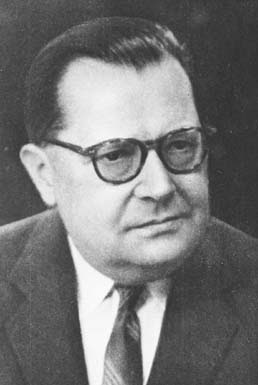

La perspectiva a dar un intro al tema
La Teoría General de Sistemas (TGS) es un marco interdisciplinario para estudiar los sistemas en general, independientemente de su naturaleza (biológica, física, social, etc.). Busca comprender los principios fundamentales que rigen a los sistemas en general, independientemente de su naturaleza específica. Aborda el estudio de sistemas tanto vivos como no vivos, desde átomos hasta organismos complejos, incluyendo las organizaciones sociales y tecnológicas. Un sistema es una entidad con límites, partes interrelacionadas e interdependientes que forman un todo con propiedades emergentes (mayores a la suma de sus partes). El cambio en una parte del sistema afecta a las demás y al sistema en su conjunto, generando patrones predecibles de comportamiento. El objetivo de la TGS es descubrir las dinámicas, restricciones y condiciones que determinan el comportamiento de los sistemas, así como principios (propósitos, medidas, métodos, herramientas, etc.) aplicables a cualquier sistema.
Origen

- Introducción a la TGS: Definición de sistema, tipos de sistemas, principios básicos de la TGS.
- Los sistemas abiertos: Importancia de la entropía, homeostasis, intercambio con el medio ambiente.
- Teleología y organización: Propósito y organización de los sistemas, jerarquía, control y comunicación.
- Crecimiento y desarrollo: Modelos de crecimiento, procesos de desarrollo en los sistemas.
- Teoría de la información y cibernética: Aplicación de la información y la retroalimentación en los sistemas.
- Modelos y aplicaciones: Construcción de modelos de sistemas, aplicaciones en diversas áreas como la biología, la economía y la ingeniería.
- Filosofía de la ciencia: Relación entre la TGS y la filosofía de la ciencia, crítica al reduccionismo.
- Los sistemas existen dentro de sistemas.
- Los sistemas son abiertos.
- Las funciones de un sistema dependen de su estructura.
- Sistema: Un conjunto de elementos interdependientes que interactúan entre sí para alcanzar un objetivo común.
- Entropía: La tendencia natural de un sistema hacia el desorden y la desorganización.
- Homeostasis: La capacidad de un sistema para mantener un equilibrio interno frente a cambios en el entorno.
- Retroalimentación: El proceso por el cual la salida de un sistema se utiliza para controlar su comportamiento.
- Emergencia: La propiedad de un sistema de generar propiedades nuevas que no son simplemente la suma de las propiedades de sus elementos individuales.
- Enfoque holístico: Permite comprender los sistemas como un todo, no solo como la suma de sus partes.
- Pensamiento sistémico: Desarrolla la capacidad de analizar y resolver problemas de forma interdisciplinaria.
- Mejora la comunicación: Facilita la comunicación entre diferentes disciplinas y áreas de conocimiento.
- Promueve la innovación: Estimula el desarrollo de nuevas soluciones a problemas complejos.
Teoría General de Sistemas:.
Originalmente una concepción totalizadora de la biología, conceptualizando al organismo como un sistema abierto. Se basa en la idea de que las propiedades de un sistema no pueden describirse por sus elementos separados, sino que solo se comprenden estudiando el sistema en su conjunto. Se publicó en 1969 en el libro "Teoría general de sistemas". Se utiliza para explorar y explicar temas científicos, incluyendo una concepción humanista de la naturaleza humana.Datos que maneja el libro (TGS): .
Premisas básicas de la TGS:.
Algunos De Sus Conceptos